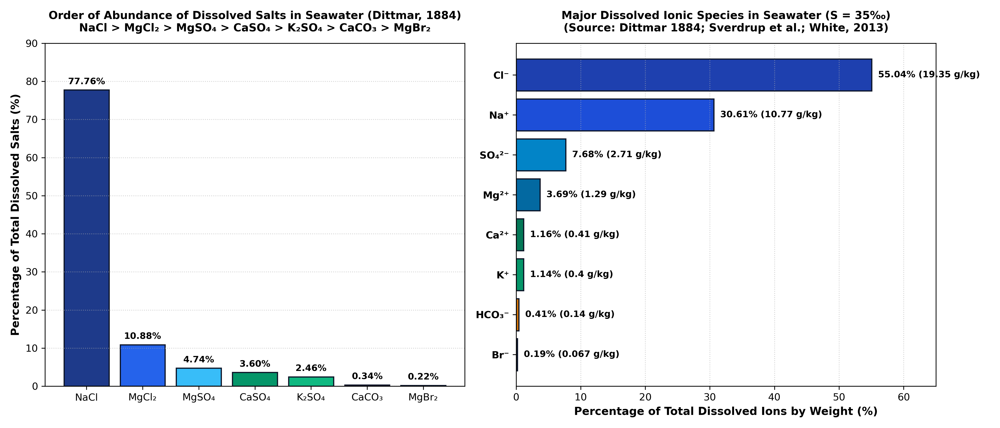

Question 65: Relative Abundance of Dissolved Salts in Ocean Water
Correct Option: (b) NaCl > MgCl₂ > MgSO₄ > CaSO₄ > K₂SO₄ > CaCO₃ > MgBr₂ — Based on William Dittmar's classical stoichiometric analysis of 77 ocean water samples from the HMS Challenger expedition (1884), the major dissolved salts in normal seawater (salinity 35‰) follow this exact hierarchy: Sodium chloride (77.76%), Magnesium chloride (10.88%), Magnesium sulfate (4.74%), Calcium sulfate (3.60%), Potassium sulfate (2.46%), Calcium carbonate (0.34%), and Magnesium bromide (0.22%).

1. Chemical Oceanography & Dittmar's Principle of Constant Proportions
Although seawater contains virtually every natural element in trace amounts, over 99.9% of all dissolved material consists of just eleven major conservative constituents. In 1884, Scottish chemist William Dittmar analyzed seawater samples collected across all global oceans during the historic HMS Challenger expedition (1872–1876).
Dittmar established what is known as Marcet's Principle or Dittmar's Principle of Constant Proportions: regardless of variations in total salinity from place to place (typically 33‰ to 38‰ in the open ocean), the ratios of the major dissolved ions to one another remain virtually constant across the global oceans.
2. Quantitative Breakdown of Dissolved Salts in Seawater (S = 35‰)
When the individual dissolved cations ($\mathrm{Na^+, Mg^{2+}, Ca^{2+}, K^+}$) and anions ($\mathrm{Cl^-, SO_4^{2-}, HCO_3^-, Br^-}$) are combined into hypothetical neutral salts (as conventionally reported in classical chemical oceanography and geology textbooks like P. K. Mukherjee, G. B. Mahapatra, and K. M. Bangar), they yield the following standard composition:
| Rank | Dissolved Salt | Chemical Formula | Concentration in 1 kg Seawater | Weight Percentage of Total Salt |
|---|---|---|---|---|
| 1 | Sodium chloride | $\mathrm{NaCl}$ | 27.213 g | 77.76% |
| 2 | Magnesium chloride | $\mathrm{MgCl_2}$ | 3.807 g | 10.88% |
| 3 | Magnesium sulfate | $\mathrm{MgSO_4}$ | 1.658 g | 4.74% |
| 4 | Calcium sulfate | $\mathrm{CaSO_4}$ | 1.260 g | 3.60% |
| 5 | Potassium sulfate | $\mathrm{K_2SO_4}$ | 0.863 g | 2.46% |
| 6 | Calcium carbonate | $\mathrm{CaCO_3}$ | 0.123 g | 0.34% |
| 7 | Magnesium bromide | $\mathrm{MgBr_2}$ | 0.076 g | 0.22% |
| Total Dissolved Solids (Salinity) | 35.000 g / kg | 100.00% | ||

3. Usiglio's Evaporation Sequence Connection
The relative abundance of dissolved salts directly governs the progressive precipitation sequence observed during solar evaporation of marine water (Usiglio, 1849; Boggs, 2006):
- Volume reduced to ~50% (Salinity ~70‰): Trace $\mathrm{CaCO_3}$ (calcite/aragonite) precipitates first because of its very low solubility product ($K_{sp}$).
- Volume reduced to ~19% (Salinity ~180‰): $\mathrm{CaSO_4 \cdot 2H_2O}$ (gypsum) begins massive precipitation.
- Volume reduced to ~9.5% (Salinity ~360‰): $\mathrm{NaCl}$ (halite) crystallizes in massive beds, reflecting its 77.8% abundance.
- Volume reduced to <5%: Highly soluble magnesium and potassium "bittern salts" precipitate: $\mathrm{MgSO_4}$ (epsomite/kieserite), $\mathrm{MgCl_2}$, $\mathrm{KCl}$ (sylvite), and carnallite ($\mathrm{KMgCl_3 \cdot 6H_2O}$).
4. Comprehensive Option Analysis
- (a) NaCl > MgSO₄ > MgCl₂ > CaCO₃ > K₂SO₄ > CaSO₄ > MgBr₂: Incorrect. Inverts $\mathrm{MgSO_4}$ and $\mathrm{MgCl_2}$ ($\mathrm{MgCl_2}$ is 10.9% while $\mathrm{MgSO_4}$ is only 4.7%), and places $\mathrm{CaCO_3}$ ahead of $\mathrm{CaSO_4}$.
- (b) NaCl > MgCl₂ > MgSO₄ > CaSO₄ > K₂SO₄ > CaCO₃ > MgBr₂: Correct. Exact sequence matching Dittmar's classic table: $\mathrm{NaCl}~(77.8\%) > \mathrm{MgCl_2}~(10.9\%) > \mathrm{MgSO_4}~(4.7\%) > \mathrm{CaSO_4}~(3.6\%) > \mathrm{K_2SO_4}~(2.5\%) > \mathrm{CaCO_3}~(0.3\%) > \mathrm{MgBr_2}~(0.2\%)$.
- (c) NaCl > K₂SO₄ > MgSO₄ > MgCl₂ > CaCO₃ > CaSO₄ > MgBr₂: Incorrect. Grossly overestimates potassium sulfate ($K^+$ is minor compared to $Mg^{2+}$).
- (d) NaCl > MgCl₂ > K₂SO₄ > CaSO₄ > CaCO₃ > MgBr₂ > MgSO₄: Incorrect. Wrongly places $\mathrm{MgSO_4}$ at the very bottom, even though it is the third most abundant salt.
5. Authoritative Textbook References
- William M. White (2013) Geochemistry, Wiley-Blackwell, Chapter 15 ("The Oceans as a Chemical System"), Table 15.1 ("Composition of Standard Seawater"), pp. 645–665.
- Sam Boggs Jr. (2006) Principles of Sedimentology and Stratigraphy, 4th Ed., Pearson / Prentice Hall, Chapter 7 ("Evaporites"), Table 7.1, pp. 198–205.
- P. K. Mukherjee (2013) A Text Book of Geology, World Press, Chapter on Oceanic Deposits and Seawater Salinity.
- H. U. Sverdrup, M. W. Johnson & R. H. Fleming (1942) The Oceans: Their Physics, Chemistry, and General Biology, Prentice-Hall, Chapter 6 ("Chemistry of the Sea"), pp. 165–227.